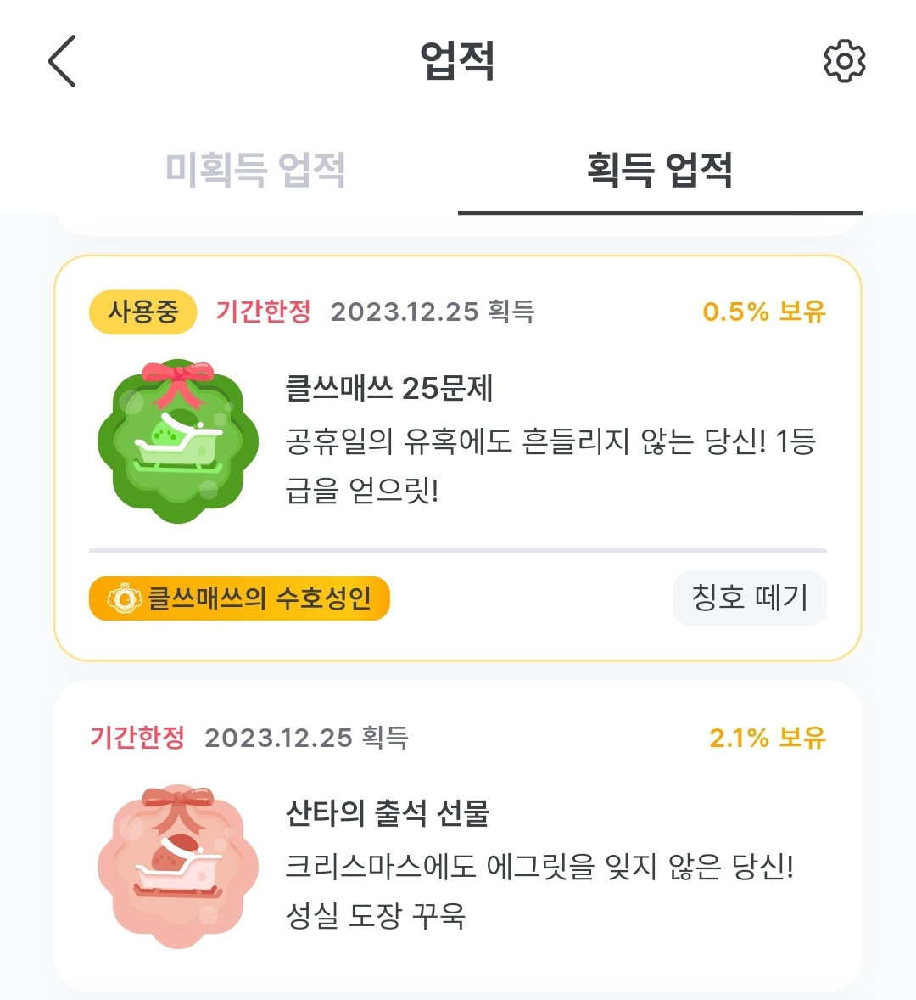

앱/SNS 계정 마케팅 콘텐츠 기획
🗺 기획 배경
아래 내용은 기획 당시의 의도를 정확히 보여드리고자 일부 재구성하여 작성하였습니다.
당시 회사 내부의 니즈
- 앱을 오픈하였으나, 아직 매출 구조가 확보되지 않아 마케팅에 비용을 쓰기 어려움
- 신규 유저 인입 : X(트위터)와 인스타그램 등을 통해 추가 비용을 최소화하여 신규 사용자 확보
- 기존 유저 리텐션 강화 : 앱 사용자를 대상으로 비용을 사용하지 않고 리텐션 강화
🧭 기획 목적 및 목표
기획 목적
- 신규 유저 인입 : X(트위터)와 인스타그램 게시글 등을 통해 우리 앱을 모르는 학생들을 앱으로 인입시킨다.
- 기존 유저 리텐션 강화 : 앱 접속자가 줄어드는 크리스마스/연말 시즌을 활용하여 유저가 비용을 들이지 않는 이벤트에도 반응하는지 알아본다.
기획 목표
- 신규 유저 인입
- X(트위터)와 인스타그램에 신규 홍보 콘텐츠 업로드
- 이전 기간 대비 앱 평균 가입자 수 상승
- 기존 유저 리텐션 강화
- 가장 접속자가 떨어질 것으로 예상되는 크리스마스 당일에 앱 내 업적을 달성할 수 있는 특별 이벤트 개최
- 시험기간 이전 평상시 DAU 달성
🏗 서비스 제작 과정
신규 유저 인입 1 : 에그릿 수능 콘텐츠
- 수능 콘텐츠를 준비할 당시의 한계 파악
- 개념원리는 기초 개념 학습에 적합한 교재라는 인식이 강함 + 에그릿은 오픈한 지 4주 가량 된 신생 브랜드 → 수능 콘텐츠로 고난도 문제 해설 등을 시도하기엔 강점이 없음
- 특히 수능 문제 해설 등 고2~고3을 타겟팅하여 마케팅하면 최대 1년 밖에 이용하지 않을 고객이 인입됨 → 장기적인 관점에서는 앱에 유리한 고객이 아님
- 한계점을 해결하기 위한 대안
- 수학 공부에 관심 있으면 누구나 보고 즐길 수 있는 재미 위주 콘텐츠
ex. 노가다만으로도 해결할 수 있는 문제, 재밌는 오답, 잘 찍는 방법
- 특히 X에 업로드 예정이므로 최대한 많이 리트윗 되는 것을 주제로 선정
- 수학 공부에 관심 있으면 누구나 보고 즐길 수 있는 재미 위주 콘텐츠
- 최종 콘텐츠 확정
- 재밌는 오답은 제작하기 힘들고, 잘 찍는 방법은 자칫 부정적인 바이럴이 날 수 있다는 의견에 최종 탈락
- 노가다만으로 풀 수 있는 문제는 매년 확률과 통계 과목에서 나온다는 것에 착안하여 해당 콘텐츠로 최종 선택
- 수능 당일 업로드된 시험지를 확인하여 확률과 통계 29번 문항을 선택하여 제작
신규 유저 인입 2 : 노베/유베 테스트
- 시장에서 새롭게 발생한 학생 분류를 차용하여 테스트 제작
- 베이스 유무(선행 과목을 모두 이해하고 있는가?)를 기준으로 학생을 분류
- 결과 추천을 쉽게 하기 위해 대상을 "고1 수학을 처음 공부하는 학생"으로 선정
- 당시 X에 주로 나오던 단어인 노베(노베이스 - 베이스가 없음)와 유베(유베이스 - 베이스가 있음)에서 착안하여 간단한 테스트로 노베/유베를 판단할 수 있는 테스트 문제 구성
- 분류한 학생에게 적절한 콘텐츠 추천
- 중1 개념을 모르는 유저 → 중1~중3 개념을 쉽게 확인할 수 있는 개념사전 추천
- 중2 개념을 모르는 유저 → 중2부터 빠르게 개념 문제를 풀어볼 수 있는 드릴학습 추천
- 중3 개념을 모르는 유저 → 중3 개념을 확실하게 학습할 수 있는 커리큘럼 학습 추천
- 전체 개념을 맞힌 유저 → 고1 개념원리 교재를 정복할 수 있는 교재연계 학습 추천
기존 유저 리텐션 강화 : 크리스마스 칭호 이벤트
- 에그릿 신규 기능 활용
- 12월 초 에그릿에 신규 기능인 '업적'과 '칭호'를 업데이트하여 업적 달성 시 닉네임 앞에 칭호를 붙일 수 있는 시스템을 확보함
- 해당 업데이트 후 의견 보내기 등으로 업적과 칭호 시스템에 대한 긍정적인 반응을 확인하여 이를 활용한 이벤트를 기획함
- 비용을 사용하지 않고 이벤트의 유저 리텐션을 강화하는 실험
- 학생들이 가장 공부를 하지 않는 12월 말이 해당 실험을 하기에 가장 적당한 시기라고 판단
- 단순한 업적 달성과 칭호를 위해 얼마나 많은 학생이 접속할 수 있는지 알아보고자 이외의 보상은 전혀 고려하지 않음
- 업적 및 칭호에 대한 학생의 반응 확인 실험
- 단순하게 달성 가능한 업적(접속)과 노력이 필요한 업적(25문제 풀기)을 세팅하여 업적 및 칭호에 대한 학생의 적극성 확인
- 50% 이상이 노력이 필요한 업적을 달성한다면 업적과 칭호에 대한 적극성이 높다고 추측
- 수치 선정 이유
- 유저의 하루 평균 문제 풀이 수 = 평균 20~25문항
- 학기 중 시험기간이 아닌 기간에 하루 25문항 이상 푸는 유저의 비율 = 최대 49%
🚀 결과물 및 목표 달성 여부
결과물
에그릿만의 수능 콘텐츠 (링크)
노베/유베 테스트

크리스마스 칭호 이벤트

목표 달성 여부
- 에그릿만의 수능 콘텐츠
- 30만건 뷰 기록
- 일주일 간 이전 대비 평균 30%의 가입자 상승률
- 노베/유베 테스트
- 2주간 1,000명 이상 참여
- 완료율 80%
- 각 문항별 이탈율 전 문항 10% 미만
- 서비스를 통해 127명이 앱 다운로드 링크 클릭 → 해당 기간 가입자 수가 이전 기간 대비 평균 10% 상승
- 크리스마스 칭호 이벤트
- 단순하게 달성 가능한 업적(접속)을 달성한 유저 중 59%가 노력이 필요한 업적(25문제 풀기) 달성
- 기존 감소 추세이던 DAU가 첫 이벤트 푸시가 나간 24일에는 전 날 대비 23.4%가 상승
- 실제 이벤트가 진행된 25일에는 전 날 대비 22.4%가 추가 상승하여 시험 기간 이전 DAU를 회복